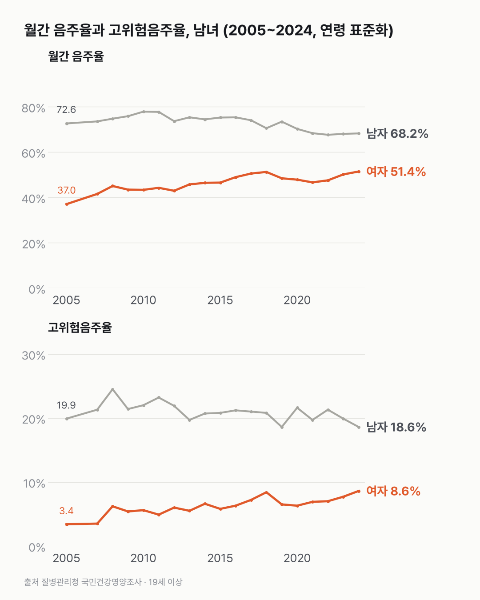
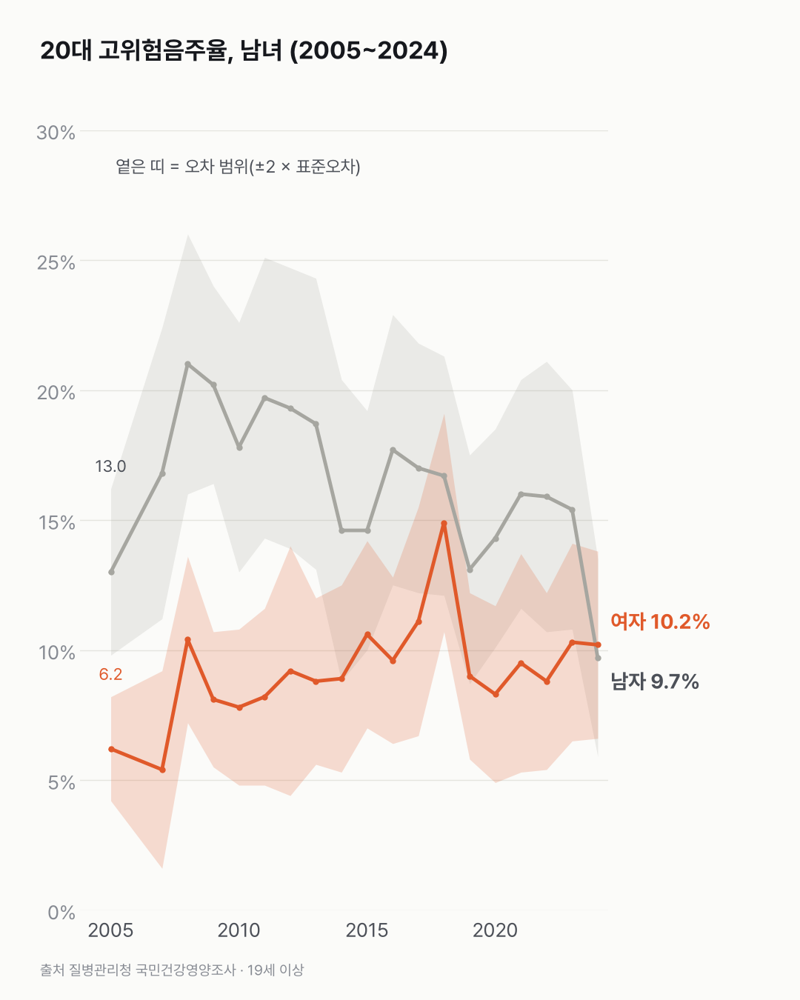

20대에선 술 많이 마시는 여자와 남자가 비슷해졌어요
마시는 여자는 늘고 남자는 조금 줄었어요. 20대에선 많이 마시는 비율이 남녀 거의 같아졌어요.

- 한 달에 한 번 이상 마시는 여자는 2005년 37.0%에서 2024년 51.4%가 됐어요. 남자는 72.6%에서 68.2%로 줄었어요.
- 많이·자주 마시는(고위험음주) 여자는 3.4%에서 8.6%로 이 기간 가장 높아요. 남자(18.6%)는 여전히 여자의 두 배가 넘어요.
- 2024년 20대만 보면 이 비율이 남자 9.7%, 여자 10.2%로 비슷해요.
2023년 20대 남자 고위험음주율은 15.4%였어요. 한 해 뒤 표를 열어 보니 값이 크게 내려와 있었어요. 2024년 9.7%로 여자 10.2%와 표준오차 안에서 겹쳐요. 한 해 만에 떨어진 값이라, 다음 조사에서도 이럴지는 아직 몰라요.
예전엔 거리가 꽤 있었어요. 2005년 20대 고위험음주율은 남자 13.0%, 여자 6.2%였어요.
20대 월간 음주율도 가까워졌어요. 남자는 78.4%에서 65.2%로, 여자는 51.8%에서 60.4%가 됐어요. 2024년 두 값의 차이(4.8%p)는 오차 범위 안이에요.
고위험음주가 가장 높은 집단은 40대 남자(30.3%)예요. 여자는 30대가 3.1%에서 12.6%로 가장 많이 올랐어요(2005년에서 2024년).

고위험음주의 기준은 남자 7잔, 여자 5잔으로 달라요. 잔 수가 다른 두 비율이 20대에서 겹쳤다는 걸 어떻게 읽을지가 남았어요.
이 숫자는 어디서 왔나요
출처
어떻게 셌나요
- 해마다 하는 건강 설문조사예요. 마신 횟수와 양은 응답자가 직접 답해요.
- 월간 음주율은 최근 1년 동안 한 달에 한 번 이상 술을 마신 사람의 비율이에요. 고위험음주율은 한 번에 평균 남자 7잔·여자 5잔 이상을 주 2회 이상 마시는 사람의 비율이에요.
- 해마다 견줄 때는 연령 표준화 값을 썼어요. 나이 구성이 해마다 달라지는 영향을 없애려고 2005년 인구 구성에 맞춰 다시 계산한 값이에요. 나이대끼리 견줄 때는 나이대 값을 그대로 썼어요.
- 두 값의 차이가 표본 오차 범위 안이면 '비슷하다'고 썼어요.
- 2006년은 조사가 없어요.
한계 4가지
이 데이터로 말할 수 없는 것
- 자기 응답이에요. 마신 양을 실제보다 적게 답할 수 있어요.
- 나이대별 값은 표본이 작아(한 집단 300~700명) 해마다 출렁여요. 한 해 변화로 판단하지 않았어요.
- 고위험음주 기준이 남녀 달라요(7잔·5잔). 같은 '고위험'이어도 마신 양은 달라요.
- 건강 조언은 아니에요. 음주를 권하거나 말리지 않고, 원인도 말하지 않아요.
계산 기록
쓰기 전에 정한 것
- 차이를 말할 때는 표준오차로 판단하기로, 데이터를 받기 전에 정했어요. 20대 남녀 비교에 그대로 썼어요.
- 해마다 견줄 때는 연령 표준화 값, 나이대끼리는 나이대 값을 쓰기로 미리 정해 두었어요.
처음 던진 질문
한 달에 한 번 이상 마시는 사람과 많이 마시는 사람이 2005년부터 2024년까지 어떻게 바뀌었는지, 국민건강영양조사를 남녀·나이대별로 열어 봤어요.
수집·검증 기록
- 표: KOSIS DT_11702_N012·DT_11702_N018. 수집일 2026-10-29 (KOSIS 오픈API). 단위 %, 표준오차 함께 받음.
- 판단 기준: 두 값 차이가 2 × √(SE₁² + SE₂²)보다 작으면 '비슷하다'.
- 변동계수 표시(*) 칸은 없었음.
- 교차 확인: 2024년 고위험음주율 전체 13.6%, 전년보다 남자 1.3%p↓·여자 0.9%p↑가 보도와 같음.
새 글 나오면 받아 보기
피드 리더 앱에 이 사이트 주소를 한 번 넣어 두면, 새 글이 올라올 때 앱에 떠요. 가입이나 메일 주소는 필요 없어요.
받는 법 보기
- 피드 리더 앱을 하나 골라요. 새 글을 모아 보여 주는 앱이에요. 예를 들면 Feedly나 Inoreader가 있어요. 둘 다 무료고 웹·휴대폰에서 써요.
- 앱에서 '구독 추가'(+)를 누르고 아래 주소를 붙여 넣어요.
- 끝이에요. 새 글이 올라오면 앱 목록에 떠요.
https://protofu.github.io/opendata-insight/feed.xmlFeedly를 쓴다면 여기를 눌러 바로 추가할 수도 있어요.